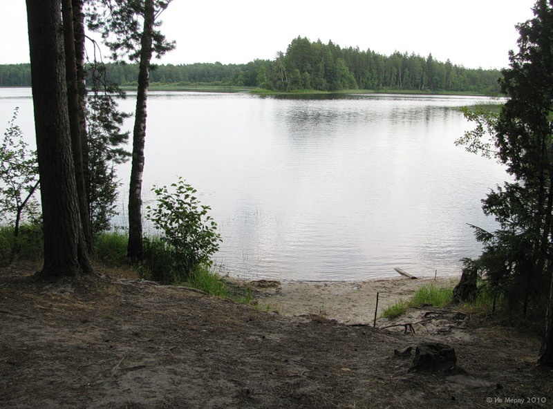
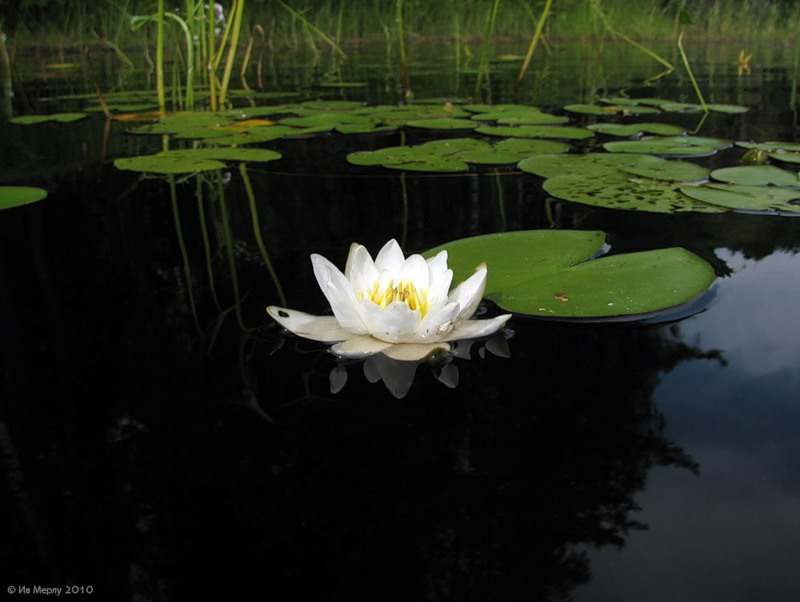
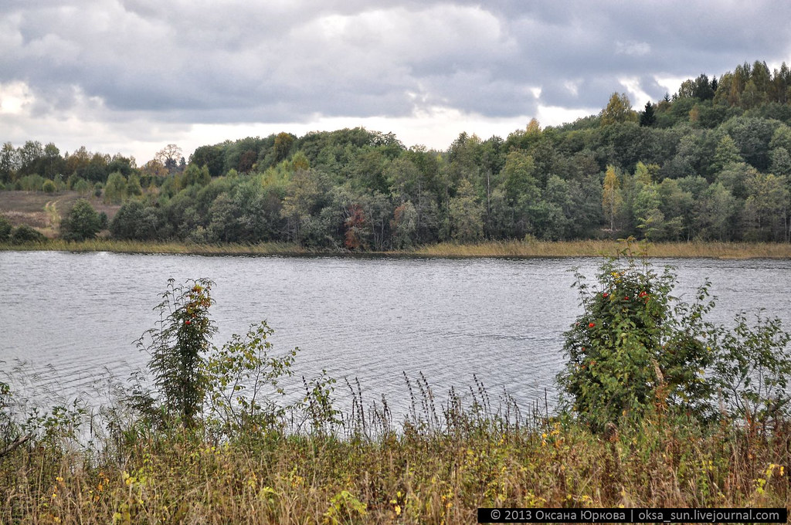
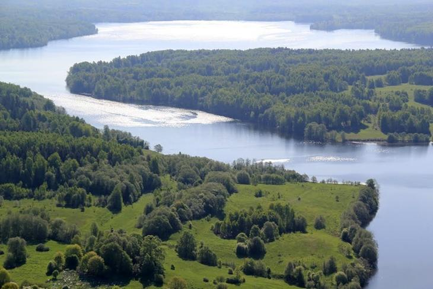

Андреаполь
1.Озеро Охват
Андреапольский район славен озерами. На сегодняшний день насчитывается более 180 больших и малых озер. Самое крупное из них — озеро Охват.
В древности через озеро проходил один из вспомогательных маршрутов пути «из варяг в греки». Об этом свидетельствуют названия протекающих здесь рек Волкота, Волок и Наволок. Водоём занимает площадь порядка 19 кв.км. По длине озеро вытянуто, без малого, на 10 км. Ширина колеблется от полутора, до нескольких десятков метров. Озеро имеет ложбинное происхождение.
2.Озеро Бросно
 Самым глубоким андреапольским озером считается знаменитое озеро Бросно (43 метра в самой глубокой точке). Согласно легендам, в озере обитает «дракон», мифическое животное. Причиной возникновения легенд, скорее всего, стала необычно большая глубина озера, и процессы гниения на глубине, приводящие к образованию сероводородных «пузырей». Это объясняет название - от глагола "броснеть" - гнить, зацветать. Однако вода в озере чистая и прохладная. На западной его точке находится затонувший храм. На озере есть всего два вида рыбы – окунь и налим, которые считаются морскими видами. Бросно было сформировано во время Ледникового периода, поэтому оно было вырезано ледником. Это одна из причин, почему озеро такое глубокое. Ученые выявили вулканическую активность глубоко внутри озера. Именно вулканические извержения могут выпускать газы на поверхность воды, которые вызывают подозрения у местных жителей.